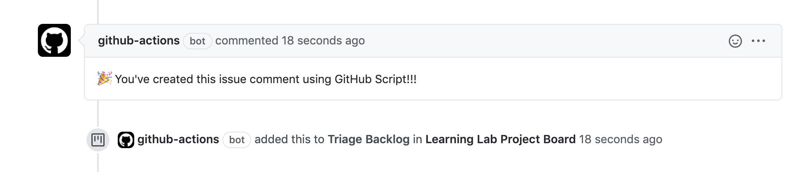

I was taking the Microsoft Learn Automate GitHub by using GitHub Script module.
I took the GitHub learning labGitHub Actions: Using GitHub Script, of which the learning happens at this repo.
Intro
The main difference between GitHub Action and octokit in usage is that GitHub Script provides you with a pre-authenticated octokit/rest.js client named github.
GitHub Script enables you to automate common GitHub processes using GitHub Actions workflows.
This allows you to use the workflow context to script any API usage that is available through the octokit/rest.js library without the need to build a bulky custom action to do so. See octokit/rest.js for the API client documentation.
Workflow
A workflow file can be thought of as the recipe for automating a task. They house the start to finish instructions, in the form of jobs and steps, for what should happen based on specific triggers.
Your repository can contain multiple workflow files that carry out a wide variety of tasks. It is important to consider this when deciding on a name for your workflow. The name you choose should reflect the tasks being performed.
GitHub Action
Workflows is defined in the /.github/workflows directory in yaml format. This is the first workflow file I created.
It is triggered by new issue, and GitHub Action bot will add a comment to the issues.
1 | name: Learning GitHub Script |
Job automated!
Automatically move issues into a GitHub Project board
The GitHub Learning Lab guided me to update the workflow to add a step, adding any newly opened issue to a specified project dashboard column as a card.
Here’s the outcome:
Here’s the dashboard that GitHub Action adds the new issue into.
Use the FS module to use a templated comment
In this unit of GitHub Learning Lab:
- GitHub Script also grants you access to a full Node.js environment.
- Instead of writing the guide directly into our workflow, we can use the Node.js File System module to read a file and use it as the body of our issue comment.
The updated my-workflow file contains instructions to load comment from .github/ISSUE_RESPONSES/comment.md:
The fs module of Node.js is used (readFileSync) to load the content of .github/ISSUE_RESPONSES/comment.md with UTF8 encoding as the body of the generated issue comment.
1 | steps: |
Conditional step
1 | - name: Add issue to project board |
This step will be executed if contains(github.event.issue.labels.*.name, 'bug')
Summary
Things you learned in this course:
- What GitHub Script is
- How GitHub Script maps to octokit/rest.js
- How to use the GitHub Script action in your workflow
- By commenting when an issue is opened
- By adding an issue to a project board when it is opened
- How to read a file from the repository for use with GitHub Script
- How to apply expressions to a workflow file